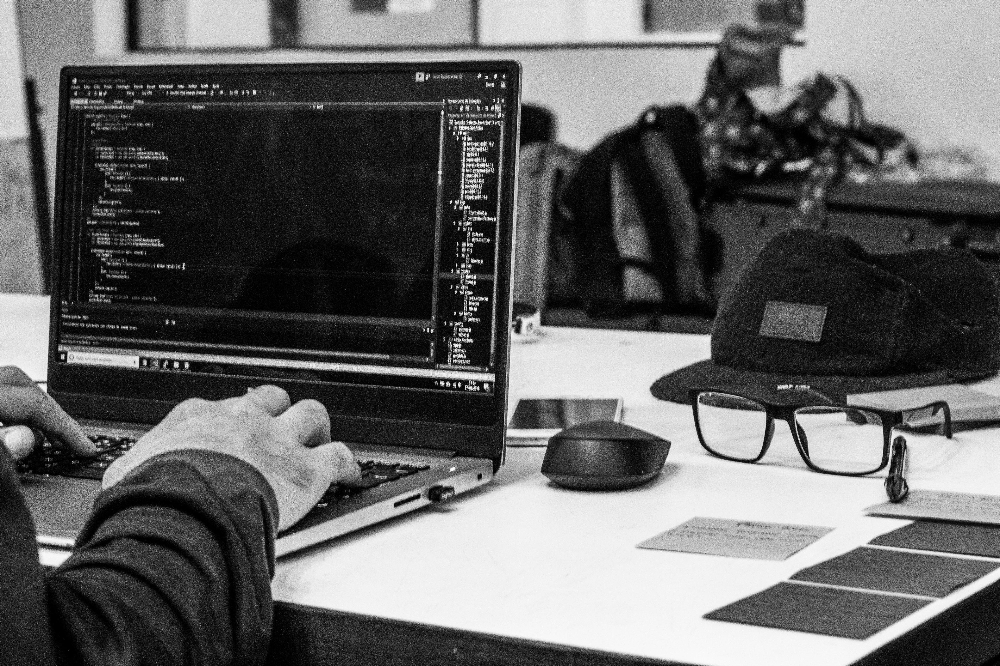

01
전공 학습
수업에서 만난 개념을 노트로 구조화하고, 작은 연습으로 이해한 내용을 확인하는 학습 기록입니다.
Personal Portfolio
01 — About
새로운 경험과 배움을 통해 꾸준히 성장하는 대학생 김서진입니다.
익숙한 방식에 머물기보다, 배우고 시도하고 정리하는 과정을 반복합니다. 전공에서 쌓은 기초 위에 새로운 도구와 경험을 더하며 시야를 조금씩 넓혀 가고 있습니다.
02 — Projects
01
수업에서 만난 개념을 노트로 구조화하고, 작은 연습으로 이해한 내용을 확인하는 학습 기록입니다.

02
AI를 결과의 대체가 아닌 생각의 도구로 사용합니다. 질문을 다듬고, 초안을 비교한 뒤 스스로 기준을 세워 고칩니다.
03
수업 밖의 경험도 배움으로 남깁니다. 기록하고 돌아보며 다음에 시도할 방향을 천천히 찾아갑니다.
03 — Contact
협업 제안, 질문, 가벼운 인사 모두 환영합니다. 아래 폼은 화면에서 동작을 확인하는 시연용이며, 입력한 내용은 전송되지 않습니다.